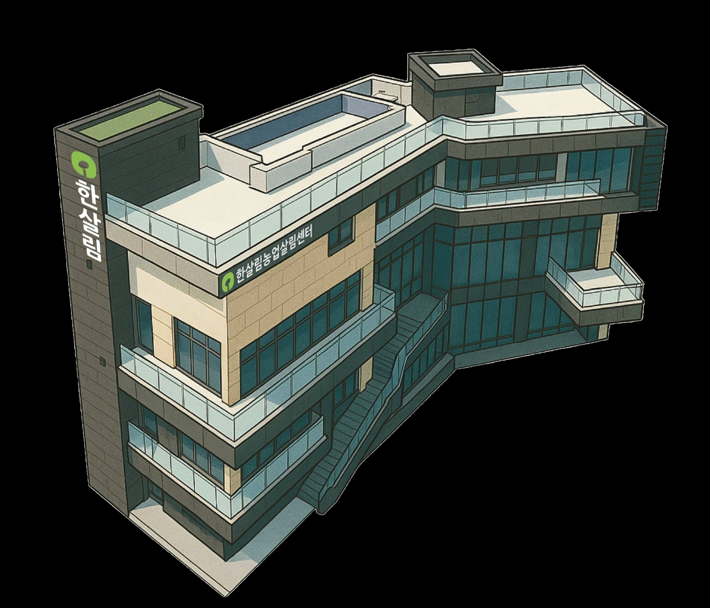

4F
연수원
외부 방문자와 교육 참여자를 위한 숙박 공간입니다. 최대 26명까지 이용할 수 있으며, 침대 22명과 매트리스 4명 기준으로 운영됩니다. 교육과 워크숍, 1박 2일 일정에 적합한 공간입니다.
회의, 숙박, 식음이 한 공간 안에서 이어지는 농업살림센터의 층별 구성을 안내합니다.

공간 소개
교육, 회의, 숙박, 식음이 한 공간 안에서 자연스럽게 이어지는 복합 공간입니다. 방문 목적에 맞는 공간을 쉽게 확인하실 수 있도록 층별 기능을 한눈에 정리했습니다.
외부 방문자와 교육 참여자를 위한 숙박 공간입니다. 최대 26명까지 이용할 수 있으며, 침대 22명과 매트리스 4명 기준으로 운영됩니다. 교육과 워크숍, 1박 2일 일정에 적합한 공간입니다.
업무와 내부 협업이 이루어지는 층입니다. 사무 기능과 함께 회의·협의가 가능한 공간이 배치되어 있어, 운영 및 실무 회의가 자연스럽게 이어질 수 있도록 구성되어 있습니다.
센터의 핵심 회의·교육 공간입니다. 중회의실은 회의 28명, 교육 40명 규모로 TV를 활용한 발표와 소규모 교육에 적합하며, 대회의실은 회의 56명, 교육 80명 규모로 빔스크린과 음향 장비를 갖추어 세미나, 워크숍, 설명회 등 다양한 프로그램 운영이 가능합니다.
방문자 응대와 휴식, 간단한 미팅이 가능한 카페 공간입니다. 센터 이용 전후에 머물기 좋으며, 보다 편안한 분위기에서 소통과 대기를 할 수 있습니다.
식사가 가능한 지하 공간입니다. 총 80석 규모의 단체석을 갖추고 있으며, 테이블 13개 기준 동시 식사 인원은 66명입니다. 교육, 행사, 회의와 연계한 단체 식사 운영에 적합합니다.
숙박, 회의, 식사, 휴식 기능이 한 장소에 모여 있어 일정 준비와 공간 이동이 편리합니다. 소규모 실무회의부터 중대형 교육 프로그램까지 한 흐름으로 이어서 운영하실 수 있습니다.